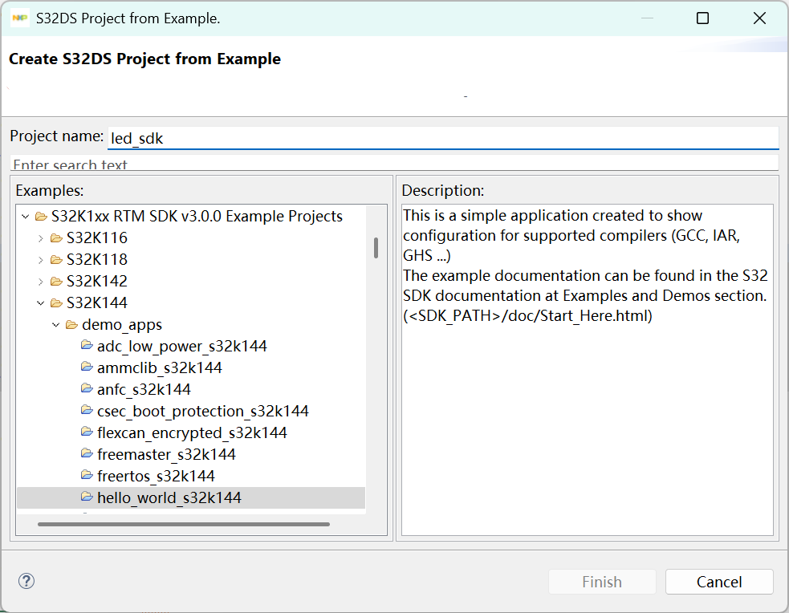
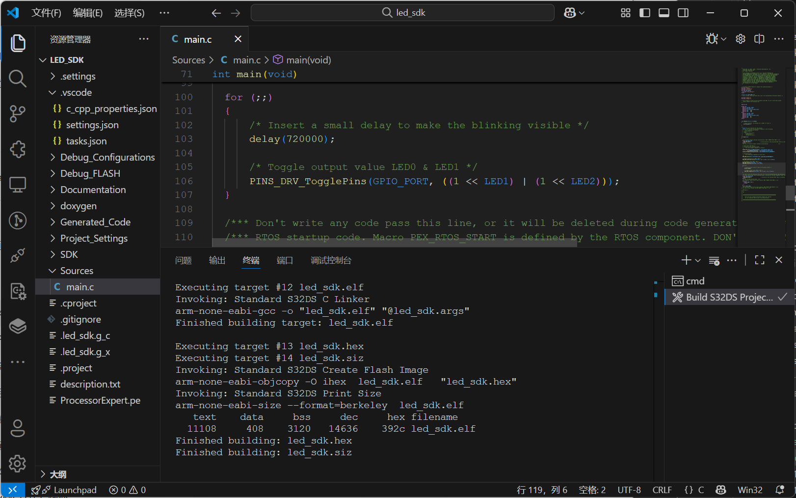

/*-----------------------------*/
📅 2025-08-30
🔄 2025-08-30
⌚ Reading time: 4 min
📂
进入汽车电子行业之后，我开始接触车规级 MCU，比如 NXP S32K144、S32K312。NXP 官方提供的开发环境是 S32 Design Studio (S32DS)，它实际上是一个基于 Eclipse 定制的 IDE。这类 IDE 在嵌入式开发里很常见，像 RT-Thread Studio 也是基于 Eclipse 定制的，都是类似的思路：
和 S32DS 相比，嵌入式开发更常用的是 Keil (MDK-ARM) 或 IAR Embedded Workbench。在 Keil/IAR 中，几乎所有编译选项都藏在 GUI 配置对话框里（工程 → Options for Target…），开发者点几下就能完成编译设置。工程文件（Keil 的 .uvprojx / IAR 的 .ewp）就是这些配置的保存载体，用户很少需要直接接触编译器命令行。
编译时 IDE 开发者几乎看不到底层命令和流程。相比之下，S32DS (Eclipse) 的方式要“开放”得多，工程目录里直接存在 makefile，编译过程透明可见，甚至可以完全脱离 Eclipse IDE，直接在命令行里运行 make -C Debug_FLASH 完成编译。
在实际项目里，一些经验丰富的老工程师喜欢 Source Insight 作为轻量的代码浏览器，快速搜索、跳转；也有人尝试 VS Code，借助 C/C++ 插件获得更现代的编辑体验如补全、跳转、代码检查、Git 集成。而对于 S32DS 这样的 Eclipse 系 IDE，如果仅仅把它当成“工程生成器”和“编译工具链”，代码编辑的部分就完全可以交给 VS Code。
我最初的出发点也很简单：👉 想在 VS Code 里像用 Source Insight 一样浏览代码。
不过，Keil/IAR 的编译过程是被封装和隐藏的，S32DS 的编译过程则是透明的，可以直接拿 makefile 在外部调用。那么完全可以在 VS Code 中直接启动编译，而且效果与 S32DS 一模一样。IDE 背后看似“一键编译”的按钮，其实就是在调用预处理、编译、汇编、链接这几个步骤；只是 Keil/IAR 把它藏了起来，而 Eclipse/S32DS 把它展示出来。
本文目标：
这里我使用的芯片为 S32K144，IDE 为 S32 Design Studio for ARM Version 2018.R1，安装了 S32 Design Studio for ARM v2018.R1 Update 11 with S32 SDK，新建一个 SDK 自带的例程并命名为 led_sdk

目录结构大致如下
led_sdk/
├── Sources/ # 用户代码
│ └── main.c
├── Generated_Code/ # Processor Expert 或 SDK 自动生成的代码
├── Project_Settings/ # 工程配置（编译器参数、链接脚本）
│ ├── Linker_Files/
│ │ └── S32K144_*.ld # 链接脚本 (决定 Flash/RAM 布局)
│ └── Startup_Code/
│ └── startup_S32K144.S # 启动文件 (复位向量表、默认中断处理)
├── Debug_FLASH/ # Debug_FLASH 配置编译输出目录
└── makefile
其中几个目录和文件非常关键：
从开发者的角度看，我们通常在 Eclipse 界面里完成以下操作：
这些操作会被保存到工程配置文件里（.project、.cproject），然后由 S32DS 自动生成对应的 makefile。因此，真正的编译体系源头是 makefile。当点下 “Build Project” 按钮时，发生的事情其实是执行 make 命令，make 会找到 makefile，并根据规则调用 arm-none-eabi-gcc 完成编译和链接。
在 Keil/IAR 中，所有编译器参数都通过 GUI 设置（Project → Options…），很少暴露底层命令。工程文件（Keil 的 .uvprojx，IAR 的 .ewp）只是 GUI 配置的 XML/文本形式，rt-thread 的 scons 工具自动生成 keil 项目时，就是去写这个文本文件，编译时 IDE 会在后台生成临时规则，但用户几乎看不到 makefile，所以很难把工程搬到 VS Code 或命令行环境下直接编译。
而 S32DS (Eclipse + make) 则不同，makefile 明明白白写在工程目录中，甚至可以完全脱离 Eclipse，直接在命令行运行 make -C Debug_FLASH，这也是为什么能在 VS Code 里轻松接入编译的根本原因。
在 IDE 里，点下 Build 按钮之后，一段时间后就能得到一个 .elf 文件。这背后，实际上经历了四个步骤，和 linux 环境下 gcc 去编译一个 helloworld.c 没有区别。
这里写成适用于 MCU 的交叉编译的命令形式
arm-none-eabi-gcc -E main.c -o main.iarm-none-eabi-gcc -S main.i -o main.sarm-none-eabi-gcc -c main.s -o main.oarm-none-eabi-ld -T S32K144_*.lds startup.o main.o -o led_sdk.elf链接时把所有 .o 文件和库文件合并，按照链接脚本 (.lds) 把代码和数据放到 Flash、RAM 的指定位置。
有些时候需要下载到 MCU 上的 hex 文件，需要用到 objcopy 工具转换
在 S32DS 生成的工程中，有几个特殊文件参与到编译过程中：
当我们在 S32DS 中点击 “Build Project”，其实就是在后台调用这些命令。比如日志中常见的几行：
arm-none-eabi-gcc -c ../Sources/main.c -o main.o -mcpu=cortex-m4 -mthumb ...
arm-none-eabi-gcc -c ../Project_Settings/Startup_Code/startup_S32K144.S -o startup.o ...
arm-none-eabi-ld -T ../Project_Settings/Linker_Files/S32K144_64_ram.ld main.o startup.o ... -o led_sdk.elf
arm-none-eabi-objcopy -O binary led_sdk.elf led_sdk.bin
这些就是 四阶段编译的直接体现。只是在 IDE 里，这些命令被「隐藏」了。
其实，不管是编译一个 Linux 应用，还是编译一个 MCU 工程，底层步骤都是一样的：预处理 → 编译 → 汇编 → 链接。
不同点在于：
刚开始在 VS Code 打开 S32DS 工程时，我的目标非常单纯：就是把 VS Code 当作 Source Insight 的替代品，用来做代码阅读。
为此我做的配置很简单：
.vscode/c_cpp_properties.json 里补充 includePath 和 defines，可以直接参考 S32DS 中的设置这样 VS Code 就能识别 #include "S32K144.h"、补全 PTC->PDDR，甚至能跳转到 PINS_DRV_WritePin() 的定义。到这一步，其实已经满足了我最初的需求：代码能补全，能跳转，看着比 S32DS 舒服。
随着对工程的熟悉理解，我意识到：S32DS 工程目录下的 Debug/、Debug_FLASH/ 里，本来就有完整的 makefile，编译的本质就是执行 make -C Debug_FLASH 命令，那么理论上，在 VS Code 里调用同样的命令，就能得到完全一致的编译结果。或者在 cmd 、windows powershell 里执行这个命令也是一样的。那么就需要使用安装 S32DS 时一同安装的工具链。
有两个关键的东西 make 和 arm-none-eabi-gcc，打开工程目录，打开 cmd，直接执行 D:\NXP\S32DS_ARM_v2018.R1\utils\msys32\usr\bin\make.exe -C Debug_FLASH 其实就已经能编译整个项目了。但是一般来说不会搞得这么冗余。把 S32DS 的工具链添加到系统的环境变量
D:/NXP/S32DS_ARM_v2018.R1/Cross_Tools/gcc-arm-none-eabi-4_9/bin/
D:/NXP/S32DS_ARM_v2018.R1/utils/msys32/usr/bin/
此时可以在 cmd 中直接使用 make 命令编译工程了。在 .vscode/tasks.json 里添加任务：
{
"label": "Build S32DS Project",
"type": "shell",
"command": "make",
"args": ["-C", "Debug_FLASH"],
"group": {
"kind": "build",
"isDefault": true
},
"problemMatcher": ["$gcc"]
}
本质上就是为一个 UI 按钮指定了对应的命令。这样按 Ctrl+Shift+B 就会自动执行命令。整个过程与 S32DS 一模一样没有任何区别，因为用的就是 S32DS 生成的 makefile 和同一个工具链。

通过这次尝试，把 S32DS 工程搬到了 VS Code：
在这个过程中，关于 IDE 与编译器之间的关系：
这种 “IDE 生成 + VS Code 编辑” 的组合模式，带来了几个好处：
当然，目前 Eclipse 依然不可或缺：
这些功能仍然需要依赖 S32DS。VS Code 虽然可以部分替代 Eclipse，但要完全替代，还需要更多插件和配置，成本并不低。
未来可以有一些更多的探索：
无论最终是否完全替代 Eclipse，一个底层逻辑：从 PC 到 MCU，编译的本质过程是相同的，只是 IDE 在不同程度上“隐藏”了它。
以下示例假设工程名为 led_sdk，编译目录是 Debug_FLASH，S32DS 安装在 D:/NXP/S32DS_ARM_v2018.R1/。
定义编译任务，一键调用 make
{
"version": "2.0.0",
"tasks": [
{
"label": "Build S32DS Project",
"type": "shell",
"command": "make",
"args": ["-C", "Debug_FLASH"],
"group": {
"kind": "build",
"isDefault": true
},
"problemMatcher": ["$gcc"]
},
{
"label": "Clean S32DS Project",
"type": "shell",
"command": "make",
"args": ["-C", "Debug_FLASH", "clean"],
"group": "build"
}
]
}
配置 头文件路径 和 宏定义，让 IntelliSense 正确工作：
{
"configurations": [
{
"name": "S32DS",
"includePath": [
"${workspaceFolder}/Sources",
"${workspaceFolder}/Generated_Code",
"D:/NXP/S32DS_ARM_v2018.R1/S32DS/software/S32SDK_S32K1xx_RTM_3.0.0/platform/devices/S32K144/include",
"D:/NXP/S32DS_ARM_v2018.R1/S32DS/software/S32SDK_S32K1xx_RTM_3.0.0/platform/drivers/inc"
],
"defines": [
"CPU_S32K144HFT0VLLT"
],
"compilerPath": "arm-none-eabi-gcc",
"cStandard": "c99",
"intelliSenseMode": "gcc-arm"
}
],
"version": 4
}